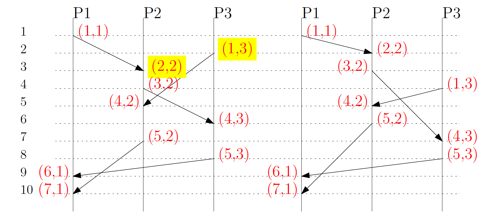

“Happens Before”
Event a happens-before b, a->b, iff:
- Internal event: a and b occur in the same node
- Same message, a is send and b is receive
- a->c, c-> b: transitive
Partial Order
happens-before relationships form a DAG (directed asynchronous graph)
Logical Time, Logical Clock
Logical Time
Logical time is a mapping C from events to a partially ordered set.
1 |
|
- The value of the logical time indicates the order of events.
- If two events do not have a happens-before relationship, then their logical time should not be comparable.
- If the clock maps to a totally ordered set, i.e. any two logical times are comparable to each other, then it is not ideal. This is because even if two events do not have a happens-before relationship, their logical time will still be comparable.
Assessing the Logical Time/Logical Clock in #A1
What is the logical time in this algorithm?
Message.time.
Given two message events (either receive or send) a and b,
a happens before b => a.time < b.time
Must-have features of a logical clock?
No. Unique, but not determined by node themselves.
The ideal feature of a logical clock?
No. The integer set is totally ordered.
Lamport Logic Clock
Implementation 1
- Each node has its own logical clock, initial:
clock = 0 - Before each internal/send event,
clock += 1 - Each sent messages carries the
sender‘s clock - After receiving a message,
clock = max(clock, receivedClock) + 1
- We have a “total order” logical time: a->b => Lamport(a) < Lamport(b)
- We have one must-have feature - each node manages their own logical clock
- We lost the other must-have feature: unique
Implementation 2
Ensure uniqueness by adding process IDs as the second field: lexicographic order (递归字典顺序)
Now we ensure uniqueness
Still, not ideal: (1,3) < (2,2), 根据lexicographic递归字典顺序，看到第一位1<2就可以得出结论了。 But (1,3) and (2,2) are concurrent. They should not be comparable.
Vertical Logical Clock
- Each process keeps a vector (tuple) containing all known local logical times.
- These tuples are ordered on each component, not lexicographically. (只是前面的一位比较不够，每一位都需要比较)
- Each process increments its local logical time before local/send event.
- At receive event:
Global Snapshot: Count Money
The snapshot will count in:
- The amount already in the node at time t
- The money already sent to the node, but are still in transit
Therefore to take the snapshot:
- For each channel, keep adding all incoming money, until you get the first message sent after time t (marker message)
Non-FIFO work-around
Add sequence number for each channel
Ensure that you sum all messages sent before the “markers”